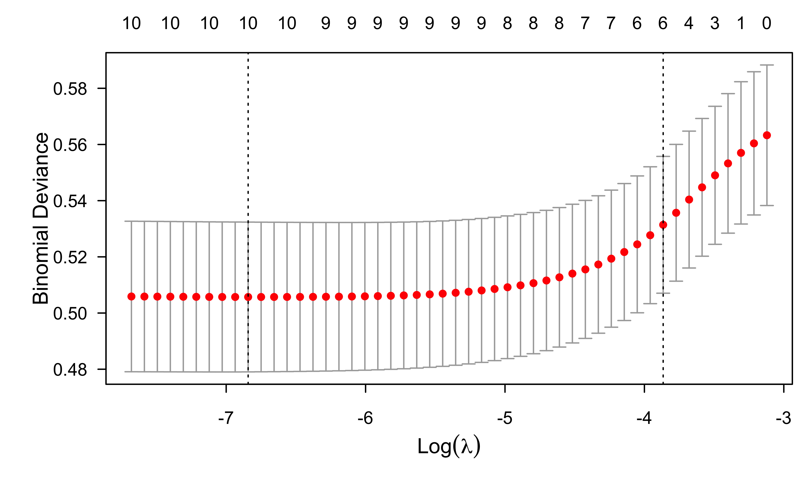

Logistic Regression (Part II)
Brandon M. Greenwell, PhD
University of Cincinnati
Western collaborative group study
\(N = 3154\) healthy young men aged 39–59 from the San Francisco area were assessed for their personality type. All were free from coronary heart disease at the start of the research. Eight and a half years later change in this situation was recorded. See ?faraway::wcgs in R.
Model selection

Exploratory data analysis
Try fitting a full model first!
Show R code
Call:
glm(formula = chd ~ ., family = binomial(link = "logit"), data = wcgs)
Coefficients: (1 not defined because of singularities)
Estimate Std. Error z value Pr(>|z|)
(Intercept) 2.657e+01 2.228e+05 0.000 1.000
age -3.651e-15 1.208e+03 0.000 1.000
height -1.087e-14 3.067e+03 0.000 1.000
weight 1.687e-15 3.832e+02 0.000 1.000
sdp 2.409e-15 6.738e+02 0.000 1.000
dbp -3.019e-15 1.068e+03 0.000 1.000
chol 8.301e-17 1.524e+02 0.000 1.000
behaveA2 -3.044e-14 2.413e+04 0.000 1.000
behaveB3 2.517e-16 2.444e+04 0.000 1.000
behaveB4 5.450e-15 2.937e+04 0.000 1.000
cigs -9.188e-16 4.526e+02 0.000 1.000
dibepB NA NA NA NA
typechdinfdeath -4.405e-06 5.876e+04 0.000 1.000
typechdnone -5.313e+01 5.223e+04 -0.001 0.999
typechdsilent -4.400e-06 6.574e+04 0.000 1.000
timechd 1.280e-16 1.080e+01 0.000 1.000
arcuspresent 5.666e-14 1.429e+04 0.000 1.000
(Dispersion parameter for binomial family taken to be 1)
Null deviance: 1.7692e+03 on 3139 degrees of freedom
Residual deviance: 1.8217e-08 on 3124 degrees of freedom
(14 observations deleted due to missingness)
AIC: 32
Number of Fisher Scoring iterations: 25Exploratory data analysis
Refit without leakage variables typechd and timechd:
Show R code
Call:
glm(formula = chd ~ ., family = binomial(link = "logit"), data = wcgs)
Coefficients: (1 not defined because of singularities)
Estimate Std. Error z value Pr(>|z|)
(Intercept) -12.331126 2.350347 -5.247 1.55e-07 ***
age 0.061812 0.012421 4.977 6.47e-07 ***
height 0.006903 0.033335 0.207 0.83594
weight 0.008637 0.003892 2.219 0.02647 *
sdp 0.018146 0.006435 2.820 0.00481 **
dbp -0.000916 0.010903 -0.084 0.93305
chol 0.010726 0.001531 7.006 2.45e-12 ***
behaveA2 0.082920 0.222909 0.372 0.70990
behaveB3 -0.618013 0.245032 -2.522 0.01166 *
behaveB4 -0.487224 0.321325 -1.516 0.12944
cigs 0.021036 0.004298 4.895 9.84e-07 ***
dibepB NA NA NA NA
arcuspresent 0.212796 0.143915 1.479 0.13924
---
Signif. codes: 0 '***' 0.001 '**' 0.01 '*' 0.05 '.' 0.1 ' ' 1
(Dispersion parameter for binomial family taken to be 1)
Null deviance: 1769.2 on 3139 degrees of freedom
Residual deviance: 1569.1 on 3128 degrees of freedom
(14 observations deleted due to missingness)
AIC: 1593.1
Number of Fisher Scoring iterations: 6What’s going on with dibep?
Let’s inspect the data a bit more; we’ll start with a SPLOM
Check for NAs
The lapply() function (and friends) are quite useful!
Show R code
age height weight sdp dbp chol
0.0000000000 0.0000000000 0.0000000000 0.0000000000 0.0000000000 0.0038046925
behave cigs dibep chd arcus
0.0000000000 0.0000000000 0.0000000000 0.0000000000 0.0006341154 Measures of Association: How to Choose?1
Check pairwise correlations
Only looking at numeric columns:
Show R code
age height weight sdp dbp
age 1.000000000 -0.09537568 -0.034404537 0.16574640 0.13919776
height -0.095375682 1.00000000 0.532935466 0.01837357 0.01027555
weight -0.034404537 0.53293547 1.000000000 0.25324962 0.29592019
sdp 0.165746397 0.01837357 0.253249623 1.00000000 0.77290641
dbp 0.139197757 0.01027555 0.295920186 0.77290641 1.00000000
chol 0.089188510 -0.08893778 0.008537442 0.12306130 0.12959711
cigs -0.005033852 0.01491129 -0.081747507 0.02997753 -0.05934232
chol cigs
age 0.089188510 -0.005033852
height -0.088937779 0.014911292
weight 0.008537442 -0.081747507
sdp 0.123061297 0.029977529
dbp 0.129597108 -0.059342317
chol 1.000000000 0.096031834
cigs 0.096031834 1.000000000Check pairwise correlations
Only looking at numeric columns:
Check pairwise correlations
Pairwise scatterplots with LOWESS smoothers:
What about categorical variables?
Contingency table cross-classifying dibep and behave:
So far…
As expected, looks like there’s moderate positive correlation between
sdpanddbpheightandweight
Not necessarily a problem (yet). But how could potentially fix any issues?
Also looks like some redunancy between the categorical variables
dibepandbehave
Looking more closely at dibep
Try a decision tree:
Show R code
n= 3154
node), split, n, loss, yval, (yprob)
* denotes terminal node
1) root 3154 1565 A (0.5038047 0.4961953)
2) behave=A1,A2 1589 0 A (1.0000000 0.0000000) *
3) behave=B3,B4 1565 0 B (0.0000000 1.0000000) *Looks like dipep can be predicted perfectly from behave (i.e., they are redundant)
Redundancy analysis
Redunancy analysis is a powerful tool available in the Hmisc package:
Redundancy Analysis
~age + height + weight + sdp + dbp + chol + behave + cigs + dibep +
arcus
<environment: 0x1480da710>
n: 3140 p: 10 nk: 0
Number of NAs: 0
Transformation of target variables forced to be linear
R-squared cutoff: 0.9 Type: ordinary
R^2 with which each variable can be predicted from all other variables:
age height weight sdp dbp chol behave cigs dibep arcus
0.083 0.323 0.379 0.606 0.617 0.054 1.000 0.050 1.000 0.055
Rendundant variables:
dibep
Predicted from variables:
age height weight sdp dbp chol behave cigs arcus
Variable Deleted R^2 R^2 after later deletions
1 dibep 1 Battery target
Cool idea from Salford Systems back in the day (now part of Minitab). Think of it as VIFs and redundancy analysis on steroids!
Full model (again)
This time we’ve removed both the leakage and redundant predictors:
Show R code
Call:
glm(formula = chd ~ . - dibep, family = binomial(link = "logit"),
data = wcgs)
Coefficients:
Estimate Std. Error z value Pr(>|z|)
(Intercept) -12.331126 2.350347 -5.247 1.55e-07 ***
age 0.061812 0.012421 4.977 6.47e-07 ***
height 0.006903 0.033335 0.207 0.83594
weight 0.008637 0.003892 2.219 0.02647 *
sdp 0.018146 0.006435 2.820 0.00481 **
dbp -0.000916 0.010903 -0.084 0.93305
chol 0.010726 0.001531 7.006 2.45e-12 ***
behaveA2 0.082920 0.222909 0.372 0.70990
behaveB3 -0.618013 0.245032 -2.522 0.01166 *
behaveB4 -0.487224 0.321325 -1.516 0.12944
cigs 0.021036 0.004298 4.895 9.84e-07 ***
arcuspresent 0.212796 0.143915 1.479 0.13924
---
Signif. codes: 0 '***' 0.001 '**' 0.01 '*' 0.05 '.' 0.1 ' ' 1
(Dispersion parameter for binomial family taken to be 1)
Null deviance: 1769.2 on 3139 degrees of freedom
Residual deviance: 1569.1 on 3128 degrees of freedom
(14 observations deleted due to missingness)
AIC: 1593.1
Number of Fisher Scoring iterations: 6Variance inflation factors (VIFs)
VIFs aren’t built into base R, so here we’ll use the car package:
GVIF Df GVIF^(1/(2*Df))
age 1.097698 1 1.047711
height 1.479064 1 1.216168
weight 1.603473 1 1.266283
sdp 2.656210 1 1.629788
dbp 2.796994 1 1.672421
chol 1.029458 1 1.014622
behave 1.030106 3 1.004956
cigs 1.054454 1 1.026866
arcus 1.060879 1 1.029990Does anyone recall how VIFs are computed? Try running this with dibep still in the model!
Body mass index = f(height, weight)
Feature engineering is useful in cases where it makes sense!
Not sure we can combine
sdbanddbpin any useful way?!heightandweightcan be combined into a single number called body mass index (BMI): \(\text{BMI} = \frac{\text{mass}_\text{lb}}{\text{height}_\text{in}^2} \times 703\)
Full model (again again)
This time, we’ll remove sdb, height, and weight, and include bmi:
Show R code
Call:
glm(formula = chd ~ age + dbp + chol + behave + cigs + arcus +
bmi, family = binomial(link = "logit"), data = wcgs)
Coefficients:
Estimate Std. Error z value Pr(>|z|)
(Intercept) -11.500594 1.026209 -11.207 < 2e-16 ***
age 0.062802 0.012227 5.136 2.80e-07 ***
dbp 0.022652 0.007073 3.203 0.00136 **
chol 0.010520 0.001507 6.982 2.90e-12 ***
behaveA2 0.135021 0.222357 0.607 0.54370
behaveB3 -0.586373 0.244718 -2.396 0.01657 *
behaveB4 -0.469271 0.320962 -1.462 0.14372
cigs 0.022668 0.004255 5.327 9.99e-08 ***
arcuspresent 0.223473 0.143358 1.559 0.11903
bmi 0.060327 0.027311 2.209 0.02718 *
---
Signif. codes: 0 '***' 0.001 '**' 0.01 '*' 0.05 '.' 0.1 ' ' 1
(Dispersion parameter for binomial family taken to be 1)
Null deviance: 1769.2 on 3139 degrees of freedom
Residual deviance: 1579.9 on 3130 degrees of freedom
(14 observations deleted due to missingness)
AIC: 1599.9
Number of Fisher Scoring iterations: 6Backward elimination
Stepwise procedures work the same here as they did for ordinary linear models
While base R has the
step()function, thestepAIC()function from package MASS is a bit better:
Call:
glm(formula = chd ~ age + dbp + chol + behave + cigs + arcus +
bmi, family = binomial(link = "logit"), data = wcgs)
Coefficients:
Estimate Std. Error z value Pr(>|z|)
(Intercept) -11.500594 1.026209 -11.207 < 2e-16 ***
age 0.062802 0.012227 5.136 2.80e-07 ***
dbp 0.022652 0.007073 3.203 0.00136 **
chol 0.010520 0.001507 6.982 2.90e-12 ***
behaveA2 0.135021 0.222357 0.607 0.54370
behaveB3 -0.586373 0.244718 -2.396 0.01657 *
behaveB4 -0.469271 0.320962 -1.462 0.14372
cigs 0.022668 0.004255 5.327 9.99e-08 ***
arcuspresent 0.223473 0.143358 1.559 0.11903
bmi 0.060327 0.027311 2.209 0.02718 *
---
Signif. codes: 0 '***' 0.001 '**' 0.01 '*' 0.05 '.' 0.1 ' ' 1
(Dispersion parameter for binomial family taken to be 1)
Null deviance: 1769.2 on 3139 degrees of freedom
Residual deviance: 1579.9 on 3130 degrees of freedom
(14 observations deleted due to missingness)
AIC: 1599.9
Number of Fisher Scoring iterations: 6Forward selection
Let’s assume we know cigs is relevant for predicting chd (regardless of its statistical significance). So we start with that in the model:
Show R code
Call: glm(formula = chd ~ cigs, family = binomial(link = "logit"),
data = wcgs)
Coefficients:
(Intercept) cigs
-2.74216 0.02322
Degrees of Freedom: 3153 Total (i.e. Null); 3152 Residual
Null Deviance: 1781
Residual Deviance: 1750 AIC: 1754Regularized regression
Regression coefficients are estimated under various constraints
Most common approaches include:
- Ridge regression, which can be useful when dealing with multicollinearity
- LASSO, which can be useful for variable selection
- Elastic net (ENet) \(\approx\) Ridge + LASSO
The glmnet package in R, among others, can fit the entire regularization path for many kinds of models, including GLMs and the Cox PH model
Useful resources
See Section 6.2 of ISL book (FREE!!)
My HOMLR book with Brad (FREE!!)
Nice intro video (Python):
ENet fit to wcgs data
Show R code
library(glmnet)
# Fit an elastic net model (i.e., LASSO and ridge penalties) using 5-fold CV
wcgs.complete <- na.omit(wcgs)
X <- model.matrix(~. - chd - dibep - bmi - 1 , data = wcgs.complete)
#lr.enet <- cv.glmnet(X, y = ifelse(wcgs.complete$chd == "yes", 1, 0),
# family = "binomial", nfold = 5, keep = TRUE)
lr.enet <- glmnet(X, y = ifelse(wcgs.complete$chd == "yes", 1, 0),
family = "binomial")
plot(lr.enet, label = TRUE, xvar = "lambda")ENet fit to wcgs data
ENet fit to wcgs data
Model performance
Prediction accuracy
- Scoring rules are used to evaluate probabilistic predictions
- A scoring rule is proper if it is minimized in expectation by the true probability
- It is a metric that is optimized when the forecasted probabilities are identical to the true outcome probabilities
- See Gneiting & Raftery (2007, JASA) and this post for details
- Examples include log loss and the Brier score (or MSE)
Statistical classification
- A classifier is a model that outputs a class label, as opposed to a probabilistic prediction
- Logistic regression is NOT a classifier!!
- Binary classification via logistic regression represents a forced choice based on a probability threshold
- Classification is rarely useful for decision making (think about a weather app that only prodiced classifications and not forecasts!)
Classification boundary
Perfect seperation (or discrimination):
Show R code
# Simulate some data
N <- 200
d1 <- cbind(matrix(MASS::mvrnorm(2*N, mu = c(0, 0), Sigma = diag(2)), ncol = 2), 0)
d2 <- cbind(matrix(MASS::mvrnorm(2*N, mu = c(8, 8), Sigma = diag(2)), ncol = 2), 1)
d <- as.data.frame(rbind(d1, d2))
names(d) <- c("x1", "x2", "y")
# Fit a logistic regression
fit <- glm(y ~ ., data = d, family = binomial)
# Plot decision boundary using 0.5 threshold
pfun <- function(object, newdata) {
prob <- predict(object, newdata = newdata, type = "response")
label <- ifelse(prob > 0.5, 1, 0) # force into class label
label
}
plot(x2 ~ x1, data = d, col = d$y + 1)
treemisc::decision_boundary(fit, train = d, y = "y", x1 = "x1", x2 = "x2",
pfun = pfun, grid.resolution = 999)
legend("topleft", legend = c("y = 0", "y = 1"), col = c(1, 2), pch = 1)Classification boundary
Class overlap (four possibilities in terms of classification):
Show R code
# Simulate some data
N <- 200
d1 <- cbind(matrix(MASS::mvrnorm(2*N, mu = c(0, 0), Sigma = diag(2)), ncol = 2), 0)
d2 <- cbind(matrix(MASS::mvrnorm(2*N, mu = c(2, 2), Sigma = diag(2)), ncol = 2), 1)
d <- as.data.frame(rbind(d1, d2))
names(d) <- c("x1", "x2", "y")
# Fit a logistic regression
fit <- glm(y ~ ., data = d, family = binomial)
# Plot decision boundary using 0.5 threshold
pfun <- function(object, newdata) {
prob <- predict(object, newdata = newdata, type = "response")
label <- ifelse(prob > 0.5, 1, 0) # force into class label
label
}
plot(x2 ~ x1, data = d, col = d$y + 1)
treemisc::decision_boundary(fit, train = d, y = "y", x1 = "x1", x2 = "x2",
pfun = pfun, grid.resolution = 999)
legend("topleft", legend = c("y = 0", "y = 1"), col = c(1, 2), pch = 1)Confusion matrix
- A confusion matrix is a special contingency table that describes the performance of a binary classifier
- More of a matrix of confusion 😱
- Lots of statistics can be computed from a given confusion matrix
- They are all improper scoring rules and can be optimized by a bogus model
- Most are not useful for decision making IMO
Example with wcgs data
Show R code
# Confusion matrix (i.e., 2x2 contingency table of classification results)
y <- na.omit(wcgs)$chd # observed classes
prob <- predict(lr.fit.all, type = "response") # predicted probabilities
classes <- ifelse(prob > 0.5, "yes", "no") # classification based on 0.5 threshold
(cm <- table("actual" = y, "predicted" = classes)) # confusion matrix predicted
actual no yes
no 2883 2
yes 253 2Confusion matrix
ROC curves
- Receiver operating characteristic (ROC) curves display the tradeoff between the true positive rate (TPR or sensitivity) and false positive rate (FPR or 1 - specificity) for a range of probability thresholds
- Invariant to monotone transformations of \(\hat{p}\)
- Precision-recall plots can be more informative when dealing with class imbalance (really not a problem with logistic regression or when dealing with probabilities)
Transposed conditionals
- Confusion of the inverse: \(P\left(A|B\right) \ne P\left(B|A\right)\)
- The error of the transposed conditional is rampant in research:
- “Conditioning on what is unknowable to predict what is already known leads to a host of complexities and interpretation problems.”
- TPR and FPR (and others) are transposed conditionals \[ \begin{align} TPR &= P\left(\hat{Y} = 1 | Y = 1\right) \\ &= P\left(\text{known} | \text{unknown}\right) \end{align} \]
ROC curve (by hand)
Show R code
threshold <- seq(from = 0, to = 1, length = 999)
tp <- tn <- fp <- fn <- numeric(length(threshold))
for (i in seq_len(length(threshold))) {
classes <- ifelse(prob > threshold[i], "yes", "no")
tp[i] <- sum(classes == "yes" & y == "yes") # true positives
tn[i] <- sum(classes == "no" & y == "no") # true negatives
fp[i] <- sum(classes == "yes" & y == "no") # false positives
fn[i] <- sum(classes == "no" & y == "yes") # false negatives
}
tpr <- tp / (tp + fn) # sensitivity
tnr <- tn / (tn + fp) # specificity
# Plot ROC curve
plot(tnr, y = tpr, type = "l", col = 2, lwd = 2, xlab = "TNR (or specificity)",
ylab = "TPR (or sensitivity)")
abline(1, -1, lty = 2)ROC curve (pROC package)
Can be useful to use a package sometimes (e.g., for computing are under the ROC curve; AKA AUROC or AUC)
Leave-one-covariate-out (LOCO) importance
A simple and intuitive way to measure the “importance” of each covariate in a model. In the simplest terms:
- Estimate baseline performance (e.g., AUROC or Brier score)
- For \(j = 1, 2, \dots p\), refit the model without feature \(x_j\) and compute the degredation to the baseline performance.
- Sort these values in a table or plot them.
See here for more details.
LOCO scores for wcgs example
Show R code
Call:
glm(formula = chd ~ ., family = binomial, data = wcgs)
Coefficients:
Estimate Std. Error z value Pr(>|z|)
(Intercept) -1.168e+01 1.026e+00 -11.387 < 2e-16 ***
age 5.922e-02 1.233e-02 4.804 1.56e-06 ***
sdp 1.806e-02 6.435e-03 2.807 0.0050 **
dbp -3.193e-04 1.087e-02 -0.029 0.9766
chol 1.047e-02 1.520e-03 6.889 5.64e-12 ***
behaveA2 8.498e-02 2.229e-01 0.381 0.7030
behaveB3 -6.238e-01 2.449e-01 -2.547 0.0109 *
behaveB4 -4.994e-01 3.211e-01 -1.555 0.1199
cigs 2.139e-02 4.294e-03 4.982 6.31e-07 ***
arcuspresent 2.238e-01 1.437e-01 1.558 0.1193
bmi 5.880e-02 2.717e-02 2.164 0.0305 *
---
Signif. codes: 0 '***' 0.001 '**' 0.01 '*' 0.05 '.' 0.1 ' ' 1
(Dispersion parameter for binomial family taken to be 1)
Null deviance: 1769.2 on 3139 degrees of freedom
Residual deviance: 1572.3 on 3129 degrees of freedom
(14 observations deleted due to missingness)
AIC: 1594.3
Number of Fisher Scoring iterations: 6Show R code
# Leave-one-covariate-out (LOCO) method
#
# Note: Would be better to incorporate some form of cross-validation (or bootstrap)
x.names <- attr(fit$terms, "term.labels")
loco <- numeric(length(x.names))
baseline <- deviance(fit) # smaller is better; could also use AUROC, Brier score, etc.
loco <- sapply(x.names, FUN = function(x.name) {
wcgs.copy <- wcgs
wcgs.copy[[x.name]] <- NULL
fit.new <- glm(chd ~ ., data = wcgs.copy, family = binomial(link = "logit"))
deviance(fit.new) - baseline # measure drop in performance
})
names(loco) <- x.names
sort(loco, decreasing = TRUE) chol cigs age behave arcus sdp
5.201189e+01 2.385372e+01 2.298085e+01 2.233397e+01 1.203822e+01 7.647463e+00
bmi dbp
4.630518e+00 8.624341e-04 
Lift charts
- Classification is a forced choice!
- In marketing, analysts generally know better than to try to classify a potential customer as someone to ignore or someone to spend resources on
- Instead, potential customers are sorted in decreasing order of estimated probability of purchasing a product
- The marketer who can afford to advertise to \(n\) persons then picks the \(n\) highest-probability customers as targets!
- I like the idea of cumulative gain charts for this!
Lift charts
Cumulative gains chart applied to wcgs example (lr.fit.all):
Probability calibration
- A probability \(p\) is well calibrated if a fraction of about p of the events we predict with probability \(p\) actually occur
- Calibration curves are the 🥇 gold standard 🥇
- Compared to general machine learning models, logistic regression tends to return well calibrated probabilities
- For details, see Niculescu-Mizil & Caruana (2005) and Kull et al. (2017) and
Probability calibration
The rms function val.prob() can be used for this:

BANA 7042: Statistical Modeling